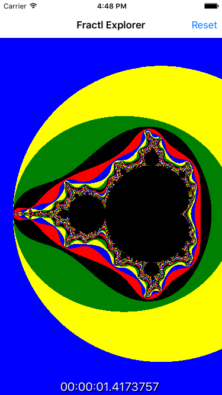

Duration
15 minutes
Goals
The primary goal of this lab is to safely stop long running tasks.

Required assets
This exercise is a continuation of the previous exercise. You may use your existing project or open the Completed solution in the Exercise 3 folder. The provided Exercise 4 folder contains a sub-folder named Completed with a solution you can use to check your work. Please make sure you have this folder before you begin.
Challenge
- Update the code in MainPage.xaml.cs to re-generate the fractal when it's panned or zoomed.
- Update GenerateFractlAsync to accept a
CancellationToken. Pass the token when creating new tasks, check for cancellation within theforloop, and catch the exception. - Create a
CancellationTokenSourceevery time StartRenderAsync is called and pass the token to GenerateFractlAsync.
Steps
Regenerate fractal on move
Our first step is to regenerate the fractal when the image is panned or zoomed.
- Open MainPage.xaml.cs.
- In OnImagePanned, when the StatusType is GestureStatus.Running, add a call to
StartRenderAsyncafter the center position has been calculated. - In OnImagePinched, when the StatusType is GestureStatus.Running, add a call to
StartRenderAsyncafter the center position has been calculated.
Check for cancellation
- Open the GenerateFractlAsync method and change the signature to accept a second parameter - a
CancellationTokennamed cancelToken. - Delete or comment-out the code to throw an exception from the previous exercise.
- Pass the cancellation token to the Task. Use an overload of
Task.Runthat accepts aCancellationTokenas the second parameter. - At the start of the for loop inside the lambda, call the
ThrowIfCanncelationRequestedmethod on cancelToken. - Add a specific catch block to handle
OperationCanceledException. If the exception is raised, just return.
Create a cancellation token source
- Add a new class level field of type
CancellationTokenSourcenamed tokenSource. - In the
StartRenderAsyncmethod, if tokenSource is notnull, call itsCancelmethod. - Assign a new instance of
CancellationTokenSourceto tokenSource. - Update the call to
GenerateFractalAsync, pass intokenSource.Tokenas the second parameter. - Run the application.
Summary
In this exercise you used a cancellation token to interrupt a long running task and improved your application's responsiveness.